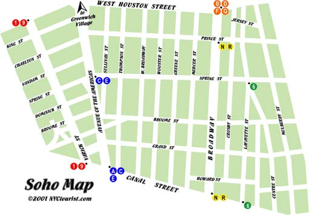

SoHo
Home
(current)
About
Location
Photographs
LOCATION
To get to SoHo take:
the N or R subway to Prince or Canal St.
the 6 to Spring or Canal St.
the B, D, F, or M to Broadway/Lafayette
the C or E to Spring St.
